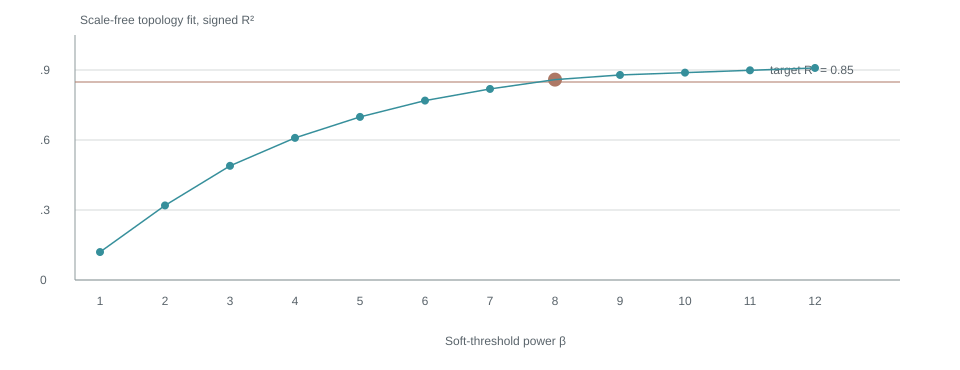
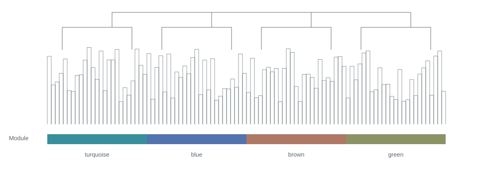

The example starts with 18 samples × 24,000 genes. The user manually excluded Mut_Drought_r3, leaving 17 samples. Raw read counts are used without transformation.
Weighted gene co-expression network analysis
Arabidopsis · drought response · example project
From expression
to connection.
A traceable analysis record. Follow the inputs, filtering decisions and module analysis, with a practical guide to reading every figure.
Arabidopsis_drought · 2026-10-27 14:30 +08:00 · rsWGCNA v0.5.0
18 → 17Input / retained samples
8,000Genes entering network
4Modules, excluding grey
30Displayed hub candidates
Style review sample: all numbers, figures, filenames and results are synthetic examples, not an analysis of existing data. The downloadable matrix contains only 8 rows to demonstrate the download experience. Production reports will use actual job results.
01
Inputs & backgrounds
Start with the source data. All sample metadata are shown, along with the scope of annotation and background statistics.
| Input | Filename (example) | Contents |
|---|---|---|
| Expression matrix | counts.tsv | 18 samples × 24,000 genes; raw read counts |
| Sample metadata | sample_info.tsv | 18 rows; sample ID, genotype, condition, replicate |
| Trait source | sample_info.tsv → condition | Selected trait column |
| Gene annotation | annotation.tsv | 24,000 unique genes; 21,300 with descriptions |
| GO | gene2go.tsv | 17,920 unique genes; 4,260 unique GO terms; 52,100 distinct mappings |
| KEGG | gene2kegg.tsv | 5,842 unique genes; 137 pathways; 12,640 distinct mappings |
Complete sample metadata 18 rows
| Sample ID | Genotype | Condition | Replicate | Analysis status |
|---|---|---|---|---|
| WT_Control_r1 | WT | Control | 1 | Retained |
| WT_Control_r2 | WT | Control | 2 | Retained |
| WT_Control_r3 | WT | Control | 3 | Retained |
| Mut_Control_r1 | Mut | Control | 1 | Retained |
| Mut_Control_r2 | Mut | Control | 2 | Retained |
| Mut_Control_r3 | Mut | Control | 3 | Retained |
| WT_Drought_r1 | WT | Drought | 1 | Retained |
| WT_Drought_r2 | WT | Drought | 2 | Retained |
| WT_Drought_r3 | WT | Drought | 3 | Retained |
| Mut_Drought_r1 | Mut | Drought | 1 | Retained |
| Mut_Drought_r2 | Mut | Drought | 2 | Retained |
| Mut_Drought_r3 | Mut | Drought | 3 | Excluded |
| WT_Recovery_r1 | WT | Recovery | 1 | Retained |
| WT_Recovery_r2 | WT | Recovery | 2 | Retained |
| WT_Recovery_r3 | WT | Recovery | 3 | Retained |
| Mut_Recovery_r1 | Mut | Recovery | 1 | Retained |
| Mut_Recovery_r2 | Mut | Recovery | 2 | Retained |
| Mut_Recovery_r3 | Mut | Recovery | 3 | Retained |
Table 1 · All 18 input rows are present. The highlighted row indicates a sample manually excluded later. IDs are preserved as uploaded. Download metadata
Count unique genes, unique terms and mapping rows separately. File coverage is different from the effective enrichment universe: production reports must also list the intersection with the analyzed gene set, unmatched IDs and duplicate mappings.
02
Final parameters
Record the final parameters used by successful runs. The narrative explains decisions; the complete parameter tables support reproducibility.
Filtering
| Parameter | Final value |
|---|---|
| normalize_method | "raw" |
| sample_percentage | 0.5 |
| cutoff | 10 |
| filter_method | "mad" |
| n_keep | 8000 |
| exclude_samples | ["Mut_Drought_r3"] |
Soft-threshold search
| Parameter | Final value |
|---|---|
| network_type | "signed" |
| rsquared_cut | 0.85 |
Network construction
| Parameter | Final value |
|---|---|
| power | 8 |
| network_type | "signed" |
| tom_type | "signed" |
| tom_denom | "min" |
| min_module_size | 30 |
| merge_cut_height | 0.25 |
| deep_split | 2 |
| detect_cut_height | 0.995 |
Module–trait
| Parameter | Final value |
|---|---|
| trait_source | "sample_info" |
| trait_column | "condition" |
Module detail
| Parameter | Final value |
|---|---|
| select_module | "turquoise" |
| select_trait | "Drought" |
Hub selection & network
| Parameter | Final value |
|---|---|
| select_module | "turquoise" |
| select_trait | "Drought" |
| kme_cutoff | 0.8 |
| gs_cutoff | 0.5 |
| weight_threshold | 0.02 |
| power | 8 |
| top_n_neighbors | 20 |
| max_hubs | 30 |
Download all parametersExample parameters; production export reads parameters used by each run, rather than unexecuted edits in the UI.
03
Filtering & sample QC
Separate sample exclusion, low-expression filtering and variable-gene selection. These are distinct decisions.
A gene is removed for low expression if its read count is below 10 in more than 50% of retained samples. With 17 samples, this means at least 9 samples below 10. This step removes 7,600 genes and leaves 16,400.
Next, 400 genes with no variation across samples are removed. The remaining genes are ranked by median absolute deviation (MAD), which describes how much expression varies between samples. The top 8,000 genes enter network analysis; another 8,000 are not selected. Genes outside the top set may still be biologically meaningful.
Input24,00018 samples
→After low-expression filter16,40017 samples
→After constant-gene filter16,000MAD > 0
→Network input8,000Top 8,000 by MAD
| Excluded sample | Action | Reason |
|---|---|---|
| Mut_Drought_r3 | Manually excluded | Not provided; no inferred quality issue |
Production export: result/02_filter/expression_filtered.tsv, containing the complete 8,000-gene × 17-sample matrix. The 8-row preview demonstrates the link only.

How to read: nearby branches indicate more similar expression profiles. Annotation rows follow the selected order: condition, genotype, using the app default category palette. The red label marks a manual exclusion. This layout illustration cannot identify actual outliers. Production reports retain both before-exclusion and final trees, reusing the app leaf order, annotation rows, labels and colors.
04
Soft threshold
Inspect candidate values, then record the chosen power and the reason for choosing it.
This example uses a signed network with β = 8, the first illustrative candidate to reach R² ≥ 0.85. Power strengthens the contrast between stronger and weaker correlations. The production report also includes mean connectivity and scale-free diagnostic plots, and states whether power was recommended or manually chosen.

How to read: candidate power is on the x-axis, fit index on the y-axis. The dashed line is the target; the brown point is the chosen power. Reaching the target alone does not establish network reliability.
05
Network & modules
Group genes with similar expression patterns and record unassigned genes.
Genes are clustered using topological overlap in a signed network. Minimum module size is 30; the module-merging distance threshold is 0.25. The example contains 4 modules and 200 unassigned grey genes; grey is excluded from the module count.

How to read: genes with the same assignment color belong to one module. Colors act as module names. Production export preserves the app pre/post-merge rows and their labels.
| Module | Gene count | Share of network input |
|---|---|---|
| ● turquoise | 2,700 | 33.75% |
| ● blue | 2,200 | 27.50% |
| ● brown | 1,800 | 22.50% |
| ● green | 1,100 | 13.75% |
| ● grey | 200 | 2.50% |
06
Module–trait
Summarize module expression using its eigengene, then compare it with selected traits.
A module eigengene (ME) summarizes the main pattern of module expression; it is not a single representative gene. The heatmap shows ME–trait correlation. Actual results must also display p-values, the statistical test and whether multiple comparisons were adjusted.

How to read: red indicates positive correlation and blue negative correlation; deeper colors indicate larger absolute correlations. Correlation does not imply causation. This illustration has no actual p-values and makes no significance claims.
07
Detail & enrichment
Inspect gene-level patterns and functional context for the selected module and trait.
Selected module: turquoiseSelected trait: Drought

How to read: each point is a gene. Larger |kME| indicates stronger alignment with the module; larger |GS| indicates stronger association with the trait. Dashed lines illustrate selection boundaries. Actual figures follow the app correlation direction, thresholds and axes.

How to read: each row is a functional term; horizontal position indicates the selected-gene ratio. Actual dot size, color scale, adjusted p-values and GO/KEGG backgrounds follow app settings. This illustration makes no enrichment claims. Missing backgrounds, unrun analyses and no significant terms must be reported as distinct states.
08
Hub genes
Distinguish candidate selection from the displayed network size.
For turquoise and Drought, this example selects candidates using |kME| ≥ 0.8 and |GS| ≥ 0.5, yielding 42 illustrative candidates. The network displays at most 30 hubs, up to 20 neighbors per hub and edges with weight at least 0.02. Production reports must reflect the engine comparison operators, ranking and limits, and export all candidates as well as displayed nodes and edges.

How to read: nodes represent genes; edges represent co-expression links passing the threshold. This figure demonstrates visual style only. Production export uses the current app nodes, edges, positions, labels, sizes and colors to prevent random rearrangement.
09
Files & reproducibility
Keep figures, data and analysis settings within reach.
| Contents | Path | Purpose |
|---|---|---|
| HTML | report/index.html | Report entry in the chosen language |
| Quarto | report/report.qmd | Editable, re-renderable report source |
| Figures & tables | result/01_input/ … 07_hub/ | Organized by report step |
| Reading guide | result/README.txt | File index, columns and interpretation |
| Analysis provenance | result/00_provenance/ | Final parameters, view state, environment and checksums |
This preview uses local SVG, CSS and JavaScript, with no external fonts or chart CDN. Copy the complete project folder to open report/index.html offline. Production export follows the current app language, generating separate Chinese or English reports.